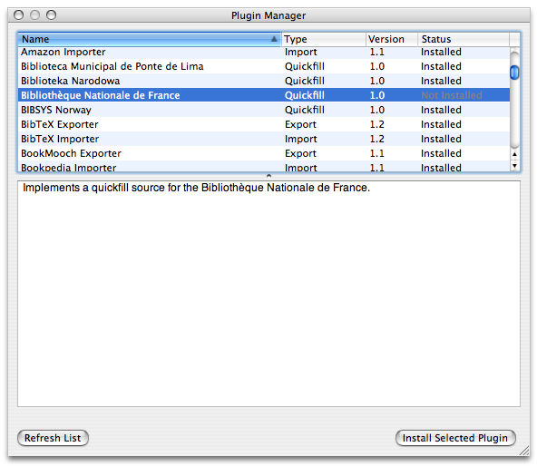

Have you used other cataloging applications?
If you're a user of another cataloging program like Delicious Library, Readerware, or LibraryThing, we would fist like to thank you for installing Books and taking it for a spin.
There are a few things that distinguish Books from similar applications and we would like to highlight them.
Books is free software.
Books costs no money and we also give away the source code.
If you're not a developer, this means that you just received a cataloging programming without
spending a cent. If you're a developer, we invite you to download the Books source and make
any modifications or improvements that you would like. We license the Books source under the
extremely liberal BSD license.
Books is designed for books.
We used a number of general-purpose cataloging programs
in the past, and while we appreciate that the developers tried to accommodate our movie,
video game, and music collections. However, these programs were too general and did not
focus on books as much as we would have liked. We found ourselves frustrated with a lack of
specific fields, limited search, and all of the compromises necessary to cram all media
into a single catalog.
The Information Window
To be clear, Books works well with almost any form of printed media. We use it to keep track of our books, comic books, audio books, and magazines. A useful rule of thumb is this: if it has an author Books will probably accommodate it.
Books works offline.
We live in an age of ubiquitous connectivity and while Books
includes some online features (such as Quickfill), it works just as well when your computer is
offline as it does when your computer is online.
Plugins! Plugins! Plugins!
Books features a plugin architecture that addresses four
areas: Quickfill, import, export, and display. Plugins can be installed using the Plugin
Manager (located under the Window menu).

The Plugin Manager
Quickfill plugins provide connections to other online libraries to make your task of entering book information easier. Unlike some of our competitors, Books can talk to a large number of online sources, including national libraries around the world. (Though to be fair, the competition is catching up.)
Import plugins allow you to load your information from other applications and services into Books. Do you want to see how well Books works with your library? Import your data and see.
Export plugins let you take your information out of Books and use it elsewhere. You can export your collection as a web site, a set of notes on your iPod, a small application on your mobile phone, or as an upload to many of the popular book swapping sites.
Display plugins allow you to customize the look and feel of the book detail view in the main window to suit your aesthetic tastes. Don't like the default view (and know some HTML and CSS)? Create your own.
Did You Know?
The first version of Books was released in 2003. At that time, there were two notable book applications on the Mac: Library and Readerware. Since then, a number of developers have released similar applications such as Booxter, Bookpedia, and Delicious Library. Readerware is still around and quite popular on the Windows platform.